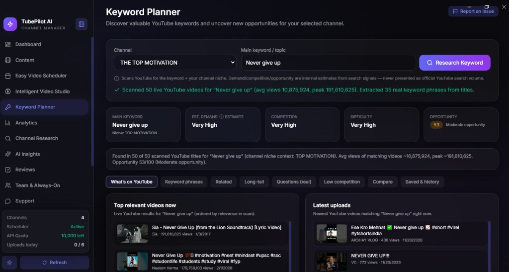
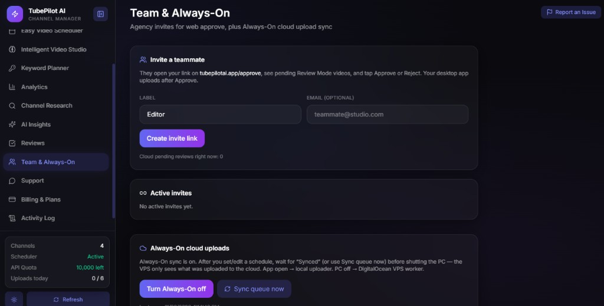
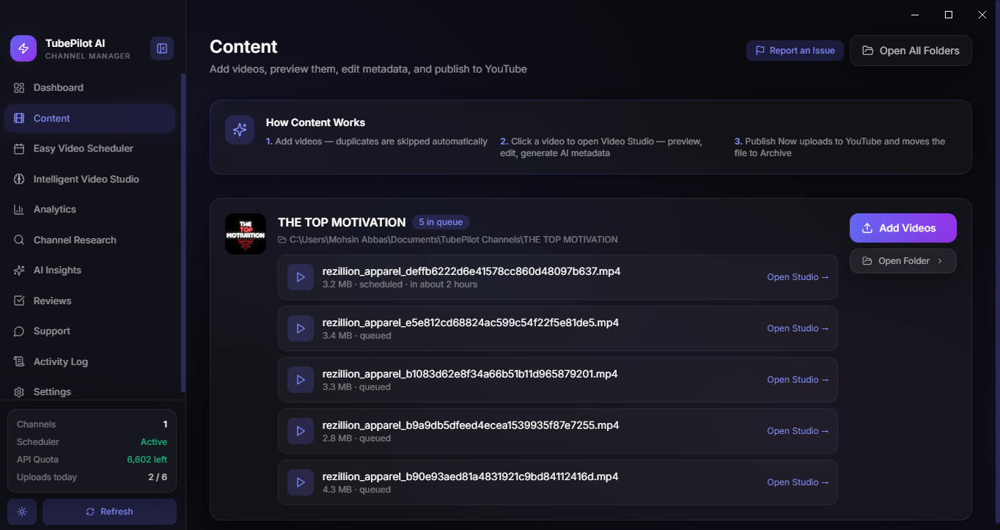
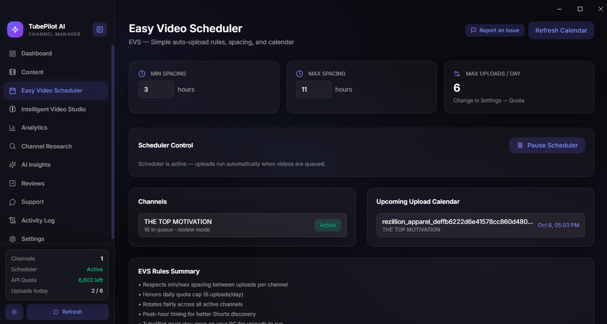
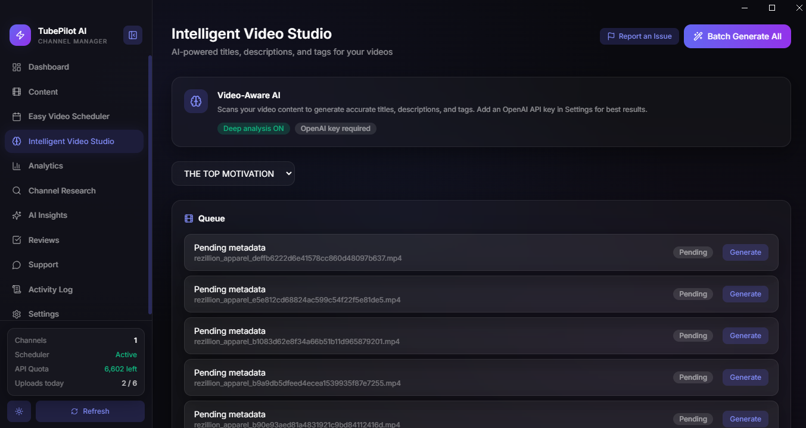
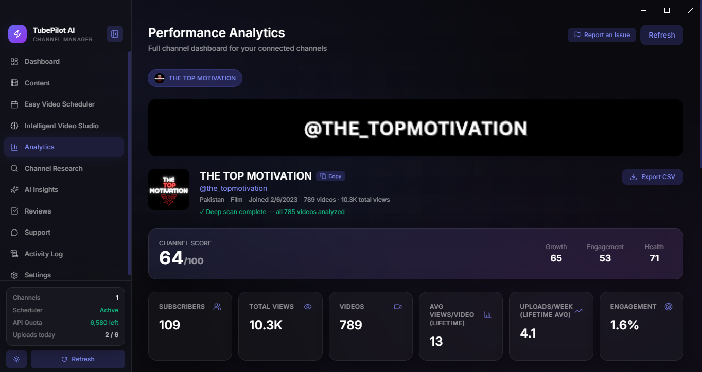
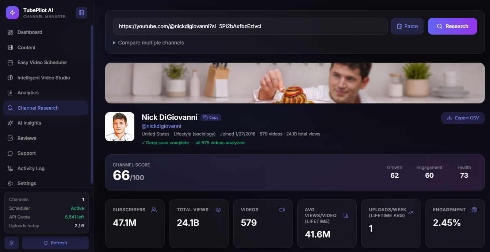
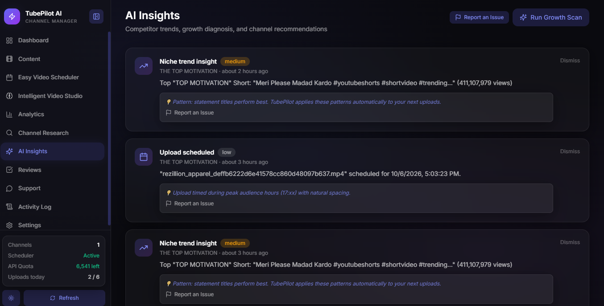
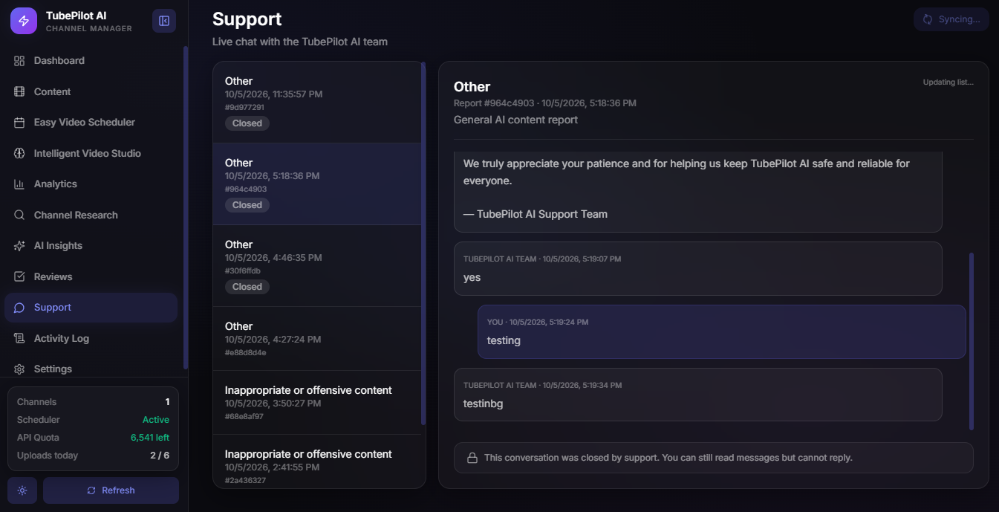
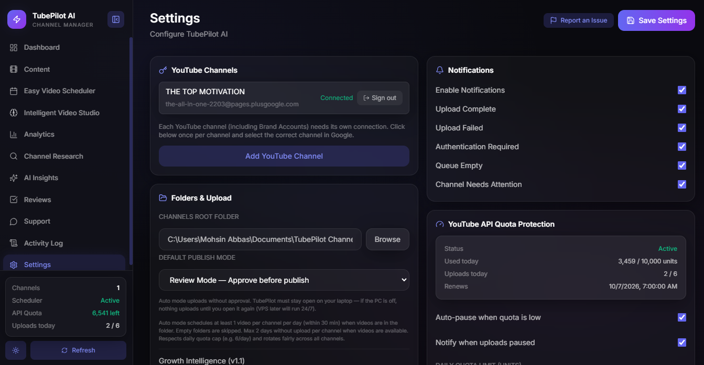

“I used to babysit uploads after midnight. With TubePilot I drop files in the folder, set the schedule once, and the queue just… behaves.”
Priya N. Education Shorts · 3 channelsTubePilot AI
Run your YouTube channels from one calm Windows workspace.
Connect channels, queue videos, schedule uploads, polish metadata, and watch performance — without jumping between a dozen browser tabs.
What creators say
“The dashboard finally matches how I think — which channel is dry, what’s next, and what already went out. Feels like a control room, not a spreadsheet.”
Marcus Hale Gaming clips · solo creator“Metadata used to eat half my afternoon. IVS drafts a title I can actually ship, then I tweak two words and move on.”
Elena Voss Motivation niche · Windows PC“We manage client channels on one machine. Review mode means nothing hits YouTube until someone on the team says yes.”
Jonah Reed Small agency · 8 channels“Bought it from the Microsoft Store so IT didn’t fight me. Install was clean, Google sign-in worked, and my first batch scheduled the same night.”
Aisha Rahman Lifestyle Shorts“Archive after upload sounds tiny until you’ve lost a folder of ‘already posted’ files. That alone saved me last week.”
Theo Park Tech explainersBuilt for the messy middle of publishing
The parts creators actually do every week — queues, schedules, metadata, and a clear view of what’s live.
Dashboard
Multi-channel at a glance
See queue depth, next upload, and channel health without opening YouTube Studio for every brand.
Content
Folder-to-queue workflow
Drop .mp4/.mov into a channel folder or use Add Videos. Rescan keeps the queue honest.
Scheduler
Easy Video Scheduler
Space uploads with your min/max rules so channels don’t dump five videos in one hour.
IVS
AI-assisted metadata
Draft titles, descriptions, and tags inside Video Studio — then edit before anything goes public.
Keyword Planner
Live YouTube keyword research
Scan real videos for a topic, see demand, competition, opportunity score, phrases, and long-tails.
Team & Always-On
Web approve + cloud uploads
Invite editors to approve on tubepilotai.app/approve. Keep publishing when the PC is off with Always-On sync.
Keyword Planner
Research what YouTube is actually showing — not guesswork.
Pick a channel niche, type a topic, and hit Research Keyword. TubePilot scans live YouTube videos, pulls real phrases from titles, and scores demand, competition, difficulty, and opportunity.
- Opportunity score with demand / competition / difficulty cards
- Tabs for what’s on YouTube, keyword phrases, related, long-tail, and real questions
- Top relevant videos and latest uploads so you see what’s winning right now
- Saved & history so niche research isn’t lost between sessions

Team & Always-On
Agency review on the web. Uploads that keep going when the PC sleeps.
Create an invite link for an editor. They open tubepilotai.app/approve, see pending Review Mode videos, and tap Approve or Reject. Your desktop app uploads after Approve.
- Invite teammates with a label and optional email
- Web approve — no need to install the app for reviewers
- Always-On sync: app open → local uploader; PC off → cloud VPS worker
- Sync queue now before shutting down so the cloud has the latest schedule

How Content works
Three steps from file on disk to video on YouTube.
1
Connect YouTube
Sign in with Google inside the app and pick the channels you own.
2
Add videos
Paste files into the channel folder or use Add Videos. Open Studio for metadata.
3
Schedule & publish
Let the scheduler upload on time — after upload, files move to Archive.
4
Track results
Dashboard and Analytics show what’s queued, published, and performing.
Inside TubePilot AI
Real screens from the Windows app — dashboard, content, scheduler, and more.








Who it’s for
Solo creators, multi-channel operators, and small agencies on Windows.
Solo creators
Keep Shorts and long-form moving without living inside Studio all day.
Multi-channel operators
Separate folders and queues per channel so brands never mix.
Small agencies
Review before publish, team approve links, and Always-On when a plan includes it.
FAQ
Straight answers before you install.
Yes. TubePilot AI is a Windows 10/11 desktop app, available on the Microsoft Store.
Yes, for uploads and channel data. You sign in with Google OAuth inside the app and only authorize channels you own or manage.
You can schedule uploads while the app is running. Always-On plans can keep publishing when the PC is off using your configured cloud worker.
It scans live YouTube videos for your topic, extracts real keyword phrases, and shows demand, competition, difficulty, and an opportunity score — plus top and latest videos for that keyword.
From Team & Always-On, create an invite link. Your teammate opens tubepilotai.app/approve, reviews pending videos, and taps Approve or Reject. The desktop app uploads after Approve.
Use in-app Support, or email team@tubepilotai.app. Privacy and terms are linked in the footer.
Get TubePilot AI on Windows
Install from the Microsoft Store, connect your channels, and put your next batch on a real schedule.
Buy on Microsoft Store